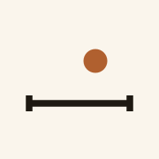
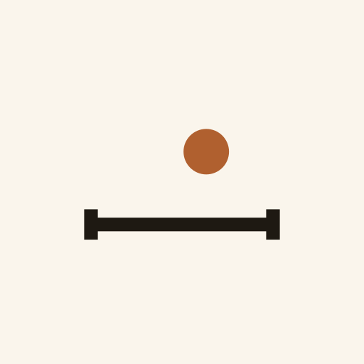
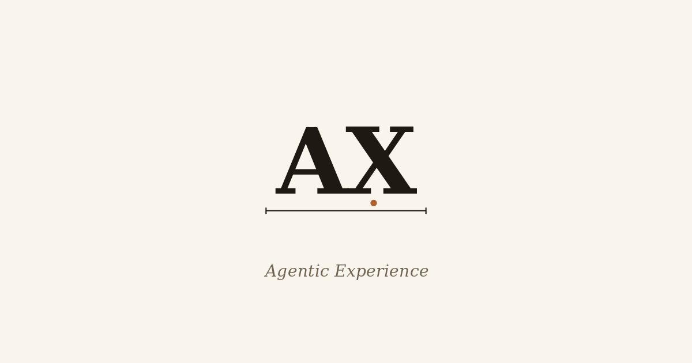
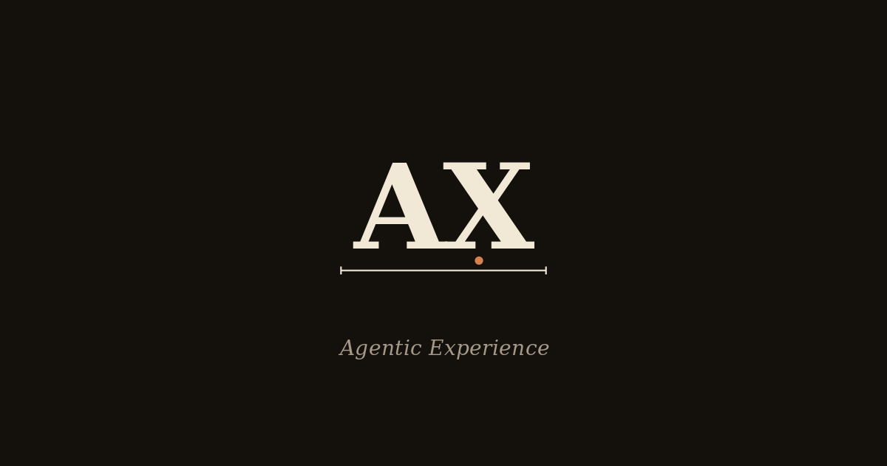

AX · Brand asset preview
Final wordmark and symbol. Toggle dark mode to check both themes. All SVG shown here uses currentColor ink and --ax-clay accent.
Wordmark at scale
Symbol at scale
Rasterized favicons (actual pixels)
Browser tab mockup
iOS home screen (apple-touch-icon)

180px (rounded by iOS)
PWA icons

512 · maskable
Open Graph / Twitter

og-image.png · light

og-image-dark.png